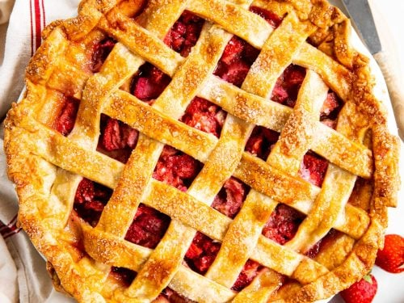

Strawberry Rhubarb Pie Recipe

Image source: SavoryNothings
Description:
A delicious combination of sweet and tart, strawberry rhubarb pie is a must bake in the spring and summer. You can make this recipe with frozen rhubarb, but fresh will always be better. Rhubarb season starts in the early spring (late March to early April) and typically lates through the early summer (May or June). Feel free to make your own pie crust or use a store bought one to save some time. This recipe is borrowed from allrecipes.
Ingredients:
- 1 cup of white sugar
- 1/2 cup of all-purpose flour
- 1 pound of rhubarb, cut into 1/4 inch slices
- 1 recipe pastry for a 9 inch double crust pie
- 2 tablespoons of unsalted butter
- 1 large egg yolk
- 2 tablespoons of white sugar, for sprinkling
Steps:
- Preheat oven to 400 degrees F (200 degrees C).
- Mix flour and sugar together in a large bowl.
- Add strawberries and chopped rhubarb. Toss with sugar and flour and let stand for 30 minutes.
- Pour filling into prepared pie crust. Dot the top with butter and cover with top crust. Seal edges of top and bottom crust with water.
- Brush egg yolk on top of pie with a pastry brush.
- Sprinkle with sugar.
- Cut several slits in the top crust to allow steam to escape.
- Bake in the preheated oven until bubbly and brown, about 35 to 40 minutes. Cool on rack.
- Enjoy with whipped cream or a side of ice cream, if desired!